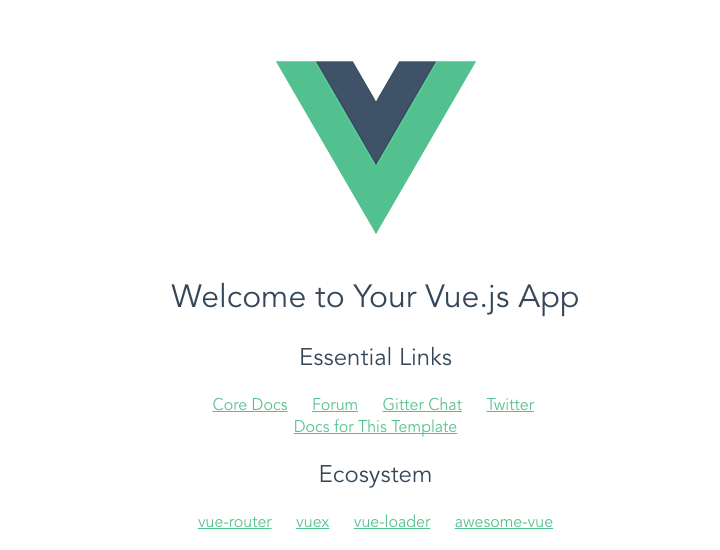

这是一个用现代最流行框架搭建的环境，从开发到正式部署，实现全栈开发不再是梦，它以Vue 为前端框架，Node 为后台支持，MongoDB为数据库，，我们跟着以下步骤一步步下来:
思路 首先我们要整理好整个工作流程：
前后端分离，各自开发。这里前后端分离是这样的：前端用Vue开发静态页面，路由通过Vue-Router进行，后端用Node仅用于编写API给前端调用获取数据。
前端开发时通过Vue-Cli中提供的proxyTable进行代理，由此可跨域调用Node编写的API。
前后端各自开发完成，测试无误后，前端通过webpack打包压缩，后端拉取前端打包压缩好的文件即部署完成。
以登录为例 安装node
此处不多说，可网上查阅安装过程
安装Vue-Cli
npm i -g vue-cli
去到你想要放置项目的目录，进行初始化
vue init webpack XXX（你想要项目的名字）
按提示一直下一步，完成后按提示
cd XXX
npm install （这里建议使用淘宝镜像cnpm，不然墙外的东西……）
npm run dev
设置镜像加速,在cmd输入https://registry.npm.taobao.org –globalhttps://npm.taobao.org/dist –global
如无意外你就会看到下图，证明成功了

如果出现一些意外有可能是端口号被占用，解决方法有
开始—->运行—->cmd，或者是window+R组合键，调出命令窗口
输入命令：netstat -ano，列出所有端口的情况。在列表中我们观察被占用的端口，比如是49157，首先找到它。
查看被占用端口对应的PID，输入命令：netstat -aon|findstr “49157”，回车，记下最后一位数字，即PID,这里是2720
我们打开任务管理器，切换到进程选项卡，在PID一列查看2720对应的进程是谁，如果看不到PID这一列
则我们点击查看—>选择列，将PID(进程标示符)前面的勾打上，点击确定。
这样我们就看到了PID这一列标识，看一下2720对应的进程是谁，如果没有，我们把下面的显示所有用户的进程前面的勾打上，就可以看到了，映像名称是svchost.exe，描述是，Windows的主进程,与上面命令查看的完全一致。
Longin.Vue 1 2 3 4 5 6 7 8 9 10 11 12 13 14 15 16 17 18 19 20 21 22 23 24 25 26 27 28 29 30 31 32 33 34 35 36 37 <template > <input class ="form-control" id ="inputEmail3" placeholder ="请输入账号" v-model ="account" > <input type ="password" class ="form-control" id ="inputPassword3" placeholder ="请输入密码" v-model ="password" > <button type ="submit" class ="btn btn-default" @click ="login" > 登录</button > </template > <script > export default { data() { return { account : '' , password : '' } }, methods:{ login() { this .$http.get('/api/login/getAccount' ) .then((response ) => { console .log(response) let params = { account : this .account, password : this .password }; return this .$http.post('/api/login/createAccount' ,params); }) .then((response ) => { console .log(response) }) .catch((reject ) => { console .log(reject) }); } } } </script >
搭建Node 在项目的根目录新建一个叫server的目录，用于放置Node的东西。进入server目录，再新建三个js文件：
index.js （入口文件）
db.js （设置数据库相关）
api.js （编写接口）
这里使用的Node框架是Express。安装Express： npm install express –save
index.js 1 2 3 4 5 6 7 8 9 10 11 12 13 14 15 16 17 18 19 20 21 22 23 24 const api = require ('./api' ); const fs = require ('fs' );const path = require ('path' );const bodyParser = require ('body-parser' )const express = require ('express' );const app = express();app.use(bodyParser.json()); app.use(bodyParser.urlencoded({extended : false })); app.use(api); app.use(express.static(path.resolve(__dirname, '../dist' ))) app.get('*' , function (req, res ) const html = fs.readFileSync(path.resolve(__dirname, '../dist/index.html' ), 'utf-8' ) res.send(html) }) app.listen(8088 ); console .log('success listen…………' );
db.js 这个js文件主要用于配置mongoDB相关东西.我们这里使用mongoose 中间件来连接mongoDB.mongoDB安装完之后，我们需要自己手动去新建一个文件夹用于放置mongoDB的数据。我的mongoDB安装在E盘，所以也在E盘根目录创建一个叫mongo-data的文件夹（名字随便取），进入该文件夹，再新建一个名叫db的文件夹。当我们去启动mongoDB服务时，我们需要指定该路径。如何开启mongoDB服务？进入mongoDB所在目录，再进入它的bin目录，敲这条命令：
mongod.exe –dbpath e:\mongo-data\db
1 2 3 4 5 6 7 8 9 10 11 12 13 14 15 16 17 18 const mongoose = require ('mongoose' );mongoose.connect('mongodb://localhost/test' ); const db = mongoose.connection;db.once('error' ,() => console .log('Mongo connection error' )); db.once('open' ,() => console .log('Mongo connection successed' )); const loginSchema = mongoose.Schema({ account : String , password : String }); const Models = { Login : mongoose.model('Login' ,loginSchema) } module .exports = Models;
api.js 1 2 3 4 5 6 7 8 9 10 11 12 13 14 15 16 17 18 19 20 21 22 23 24 25 26 27 28 29 30 31 32 33 "use strict" ;const models = require ('./db' );const express = require ('express' );const router = express.Router();router.post('/api/login/createAccount' ,(req,res) => { let newAccount = new models.Login({ account : req.body.account, password : req.body.password }); newAccount.save((err,data ) => { if (err) { res.send(err); } else { res.send('createAccount successed' ); } }); }); router.get('/api/login/getAccount' ,(req,res) => { models.Login.find((err,data ) => { if (err) { res.send(err); } else { res.send(data); } }); }); module .exports = router;
至此我们的后端代码就编写好了，进入server目录，敲上node index命令，node就会跑起来，这时在浏览器输入http://localhost:8088/api/login/getAccount就能访问到这个接口了
现在我们点击登录按钮去请求接口，当然还是不行的，因为使用npm run dev 进行开发时，其实webpack会启动一个8080的web服务用于我们进行开发，而我们后端是在8088端口的，所以我们肯定请求不到后端的接口。怎么办？跨域问题相信前端都很熟悉，难道我们又要去搞一遍解决这些问题？我们只是想开发的时候能调到后端的接口而已……
我们会发现有有一个proxyTable，这就是用来开启一个代理服务从而解决我们这个问题的：Vue-Cli官方描述。
1 2 3 4 5 6 7 8 9 proxyTable: { '/api' : { target: 'http://localhost:8088/api/' , changeOrigin: true , pathRewrite: { '^/api' : '' } } }
这时，我们在前端接口地址前加上/api，就会指向http://localhost:8088/api/，于是我们就能访问到后端的接口了！让我们来点击一下登录按钮，会发现接口请求成功了！再去数据库看看！也插入了一条新数据！成功！
npm run build 这就生成了一个dist目录，里面就是打包出来的东西。
现在回过头来看server里面的入口文件index.js
1 2 3 4 5 6 7 8 9 app.use(express.static(path.resolve(__dirname, '../dist' ))) app.get('*' , function (req, res ) const html = fs.readFileSync(path.resolve(__dirname, '../dist/index.html' ), 'utf-8' ) res.send(html) }) app.listen(8088 );
这里的关键是express.static，利用 Express 托管静态文件。于是我们才能访问到前端打包出来的静态页面index.html。http://localhost:8088/，就会跳到index.html。